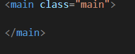

HTML/CSS - The best practices associated with using classes vs. ids
1. What are classes and ids in CSS?
Classes and IDs are CSS selectors, that allow us to select and stylize various html elements on a webpage.
The ID selector allows you to specify style guidelines that only apply to a certain web page element. Each web page can only have one element with a single ID attribute . This means the ID selector can never be used to style more than one element.
In the html file, the attribute id is used to set the id name of an element.
Within the CSS file, # (Hashtag) is used to select the ID and set the styles for it.
A class selector allows you to define style rules that apply to any element with a class attribute equal to a certain value.
While IDs can only be used once on a web page, Classes can be used across multiple elements. When we apply style using a class selector, any element which shares that class name will share the styles assigned to thjat particular class.
In the html file, the attribute class is used to set the class name.

Within the CSS file, . (Period) is used to select the class and set the styles for it.
2. What are the best practices while using classes and IDs?
- Prefer the use of classes of IDs
Classes have less specificity and IDs have higher specificity. The order of specificity is as follows:
Inline style > !important > Identifiers(ID) > Classes, pseudo-classes and attributes > Elements and pseudo-elements.
Using less specific selectors make the maintanence easy. - Use Generic ID and Class Names
Using generic ID and Class names reduce maintanence problems.